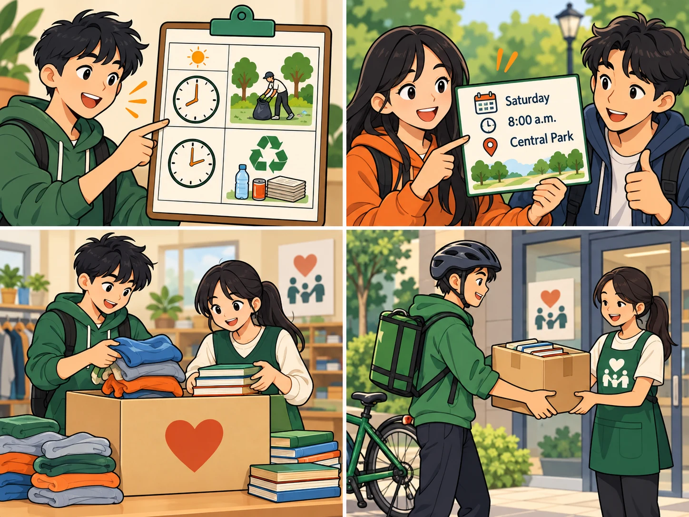
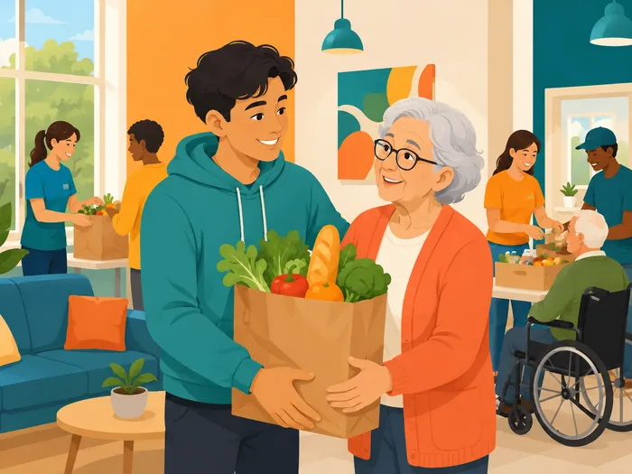
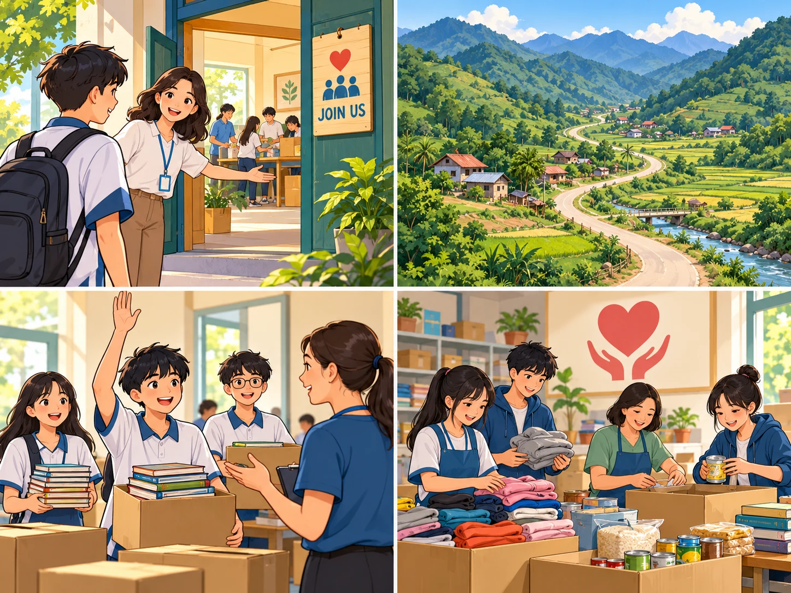
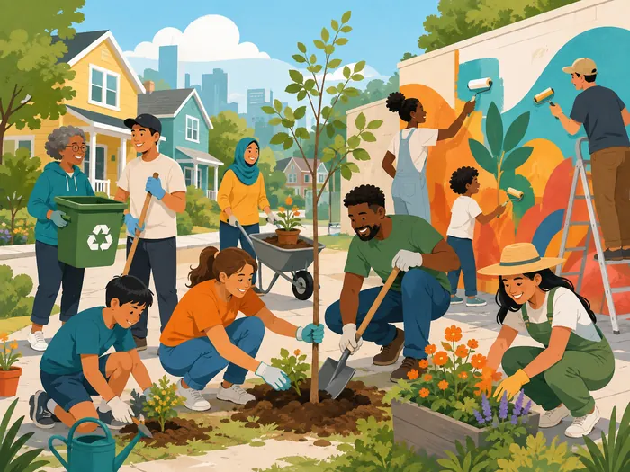
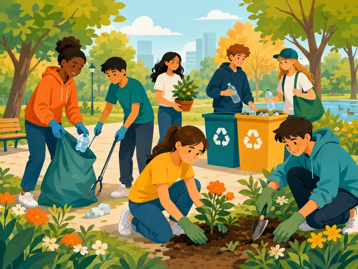
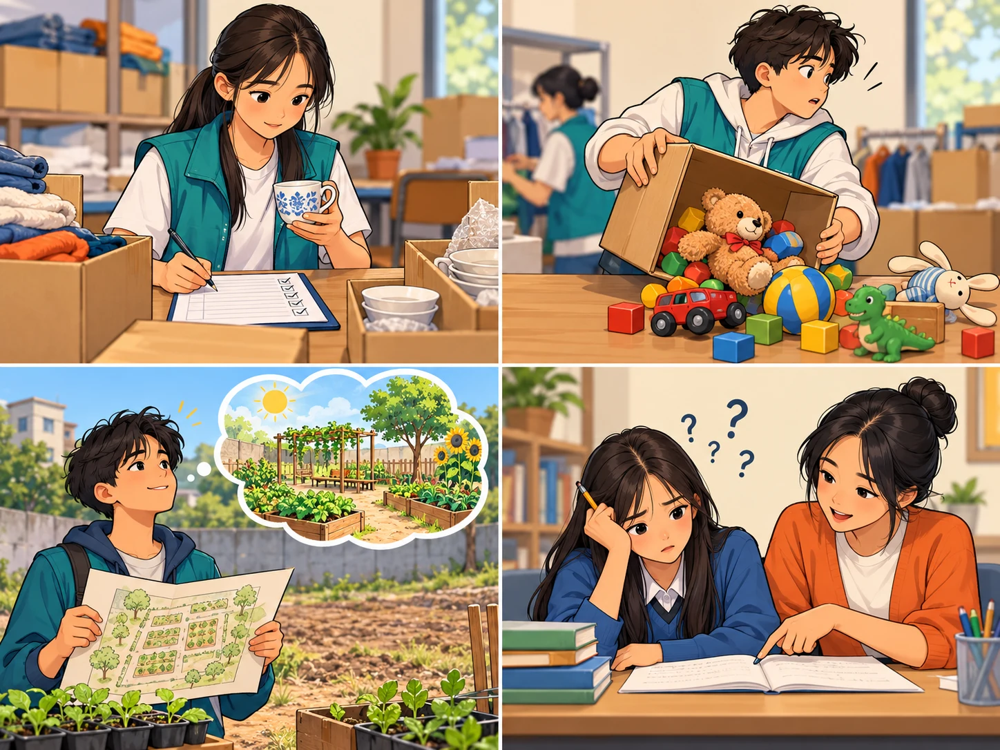
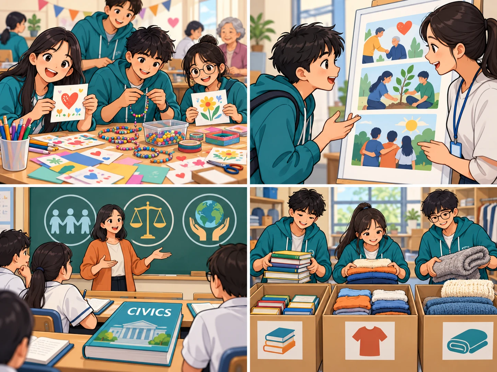

donate
(v) /dəʊˈneɪt/ quyên góp, hiến tặng People donate books and clothes to our club.
volunteer
(n/v) /ˌvɒlənˈtɪə(r)/ tình nguyện viên; tình nguyện We volunteer at the local centre.generous
(adj) /ˈdʒenərəs/ hào phóng, rộng lượng Our neighbours are generous and help the club.
remote
(adj) /rɪˈməʊt/ xa xôi, hẻo lánh We teach children in a remote village.
benefit
(v/n) /ˈbenɪfɪt/ có lợi cho (v); lợi ích (n) v: Our work can benefit others.n: One benefit is greater confidence.
willing
(adj) /ˈwɪlɪŋ/ sẵn lòng, sẵn sàng We are willing to help at the food bank.charity
(n) /ˈtʃærəti/ tổ chức từ thiện; việc từ thiện She donated books to a local charity.
clean up
(phr. v) /kliːn ʌp/ dọn dẹp, làm vệ sinh We clean up the park every Sunday.
careful
(adj) /ˈkeəfl/ cẩn thận, thận trọng Be careful when you record donations.careless
(adj) /ˈkeələs/ bất cẩn, cẩu thả A careless mistake can damage donated items.hopeful
(adj) /ˈhəʊpfl/ đầy hy vọng, lạc quan We are hopeful about the community project.hopeless
(adj) /ˈhəʊpləs/ vô vọng; rất kém (at something) I was hopeless at maths before volunteer tutoring.
interesting
(adj) /ˈɪntrəstɪŋ/ thú vị, gây hứng thú The charity craft activity is interesting.interested
(adj) /ˈɪntrəstɪd/ cảm thấy hứng thú, quan tâm I am interested in volunteer work.civics
(n) /ˈsɪvɪks/ môn Giáo dục công dân We discuss community service in our civics class.sort
(n/v) /sɔːt/ loại, kiểu (n); phân loại (v) n: What sort of books do you need?v: We sort the donations.